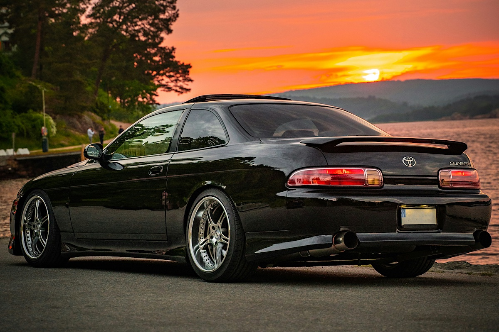
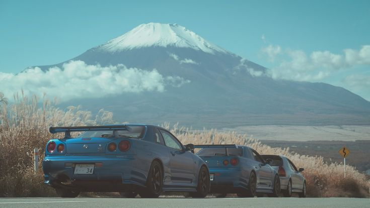
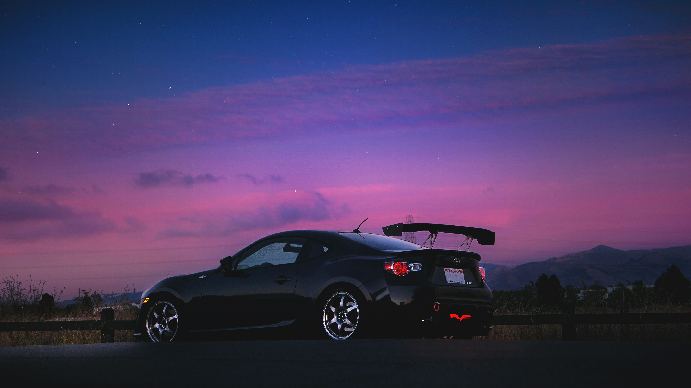
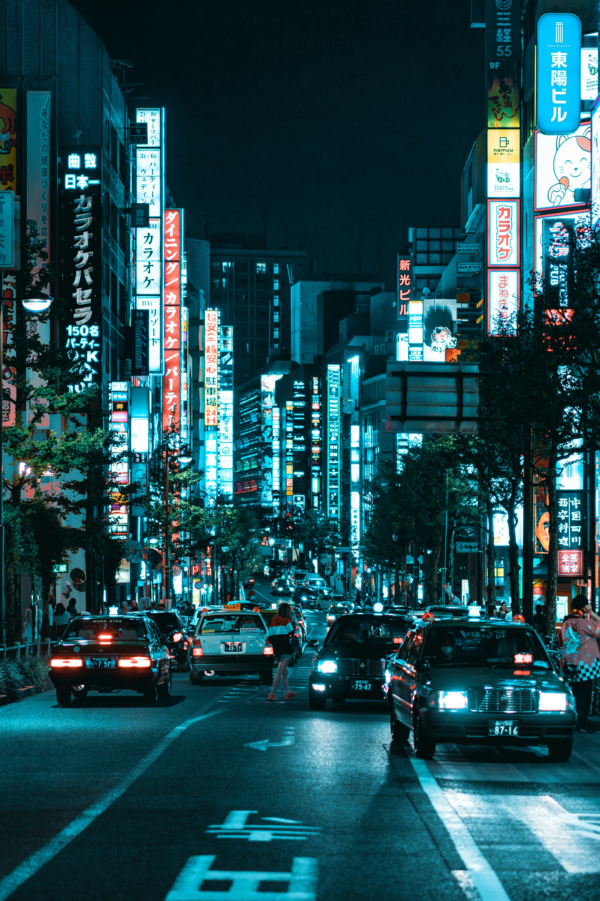
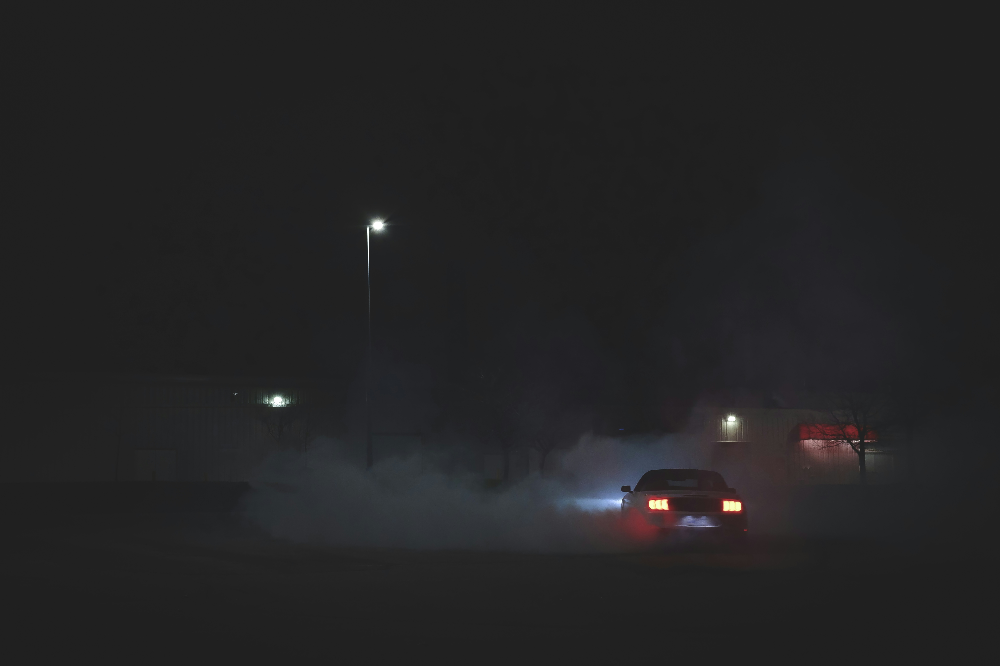
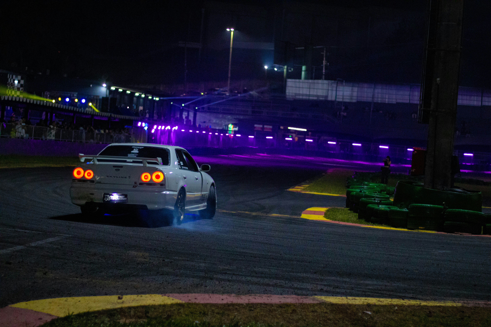
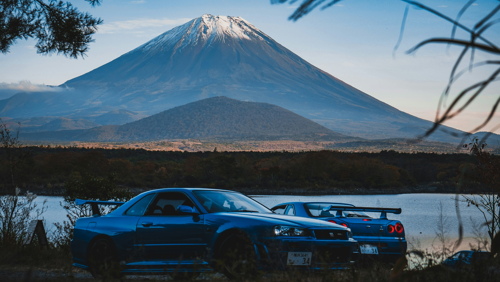

Buying Guide

Top 5 JDM Cars Under €10,000 in 2024
The best bang-for-yen machines that won't destroy your wallet — from daily-driven EK Civics to sleeper Legacys.
Read article →Japanese Automotive Culture
Where the spirit of Japanese engineering meets raw passion. From Wangan legends to mountain drift kings — this is where the culture lives.
JDM — Japanese Domestic Market — refers to vehicles and parts manufactured for sale in Japan. These machines carry a legacy of precision engineering, motorsport DNA, and cultural identity that has captured the imagination of car enthusiasts around the globe.
From the iconic circuits of Tsukuba to the mountain passes of Hakone, JDM cars were engineered not just to transport — but to connect driver to asphalt in a way nothing else can replicate.
Twin-turbo inline-sixes, rotary engines, and all-wheel drive systems that redefined what "fast" means.
Japan's automotive engineers have always pushed boundaries — VTEC, ATTESA, and BorgWarner VDC were born here.
A worldwide brotherhood of builders, tuners, collectors, and drivers united by a shared obsession.
Est. 1937
Est. 1933
Est. 1948
Est. 1920
Est. 1953
Est. 1970







The best bang-for-yen machines that won't destroy your wallet — from daily-driven EK Civics to sleeper Legacys.
Read article →
Concept cars, electric futures, and the return of iconic nameplates. Here is everything that dropped at Tokyo Big Sight.
Read article →